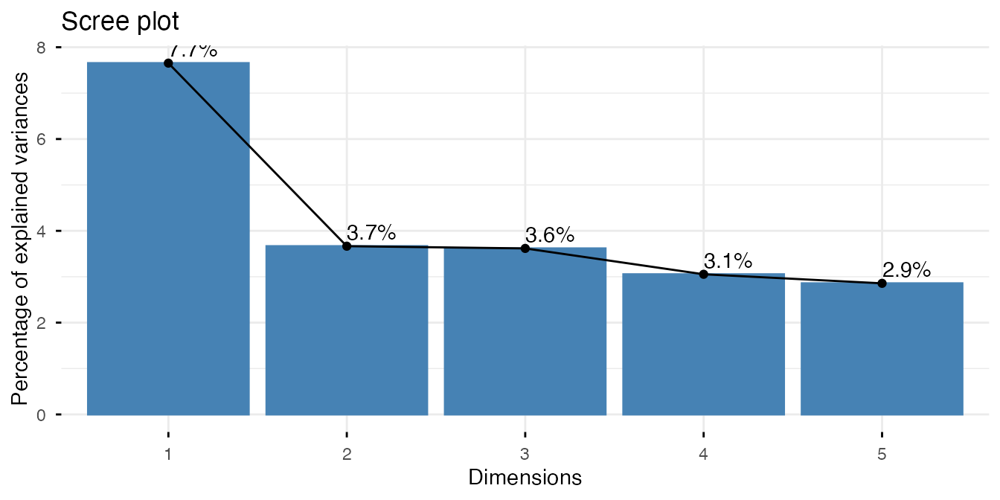
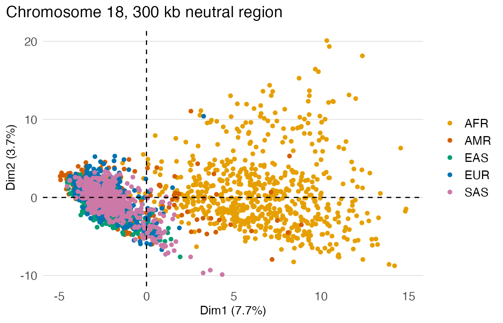
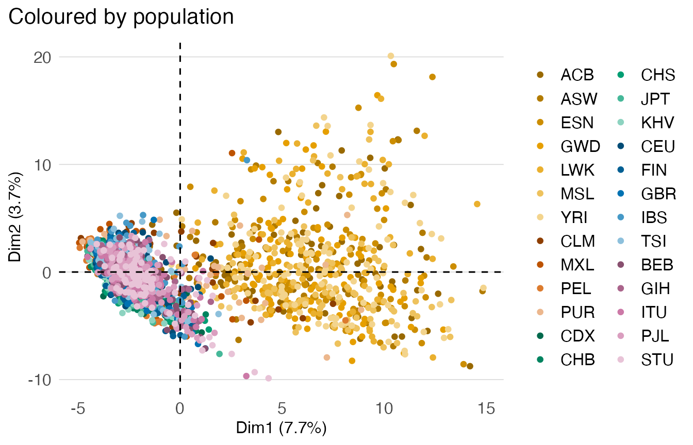
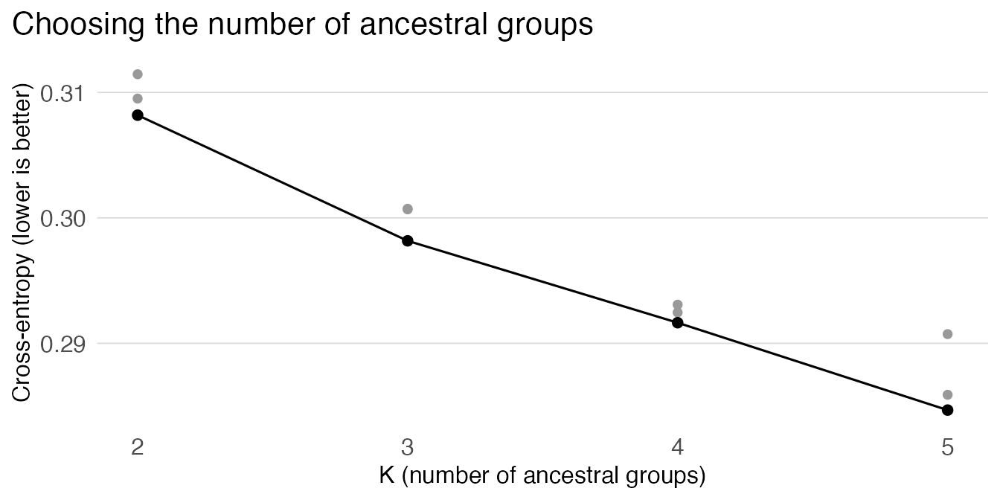
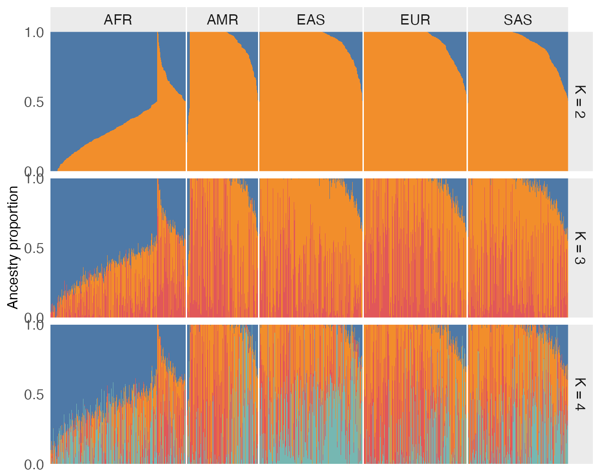
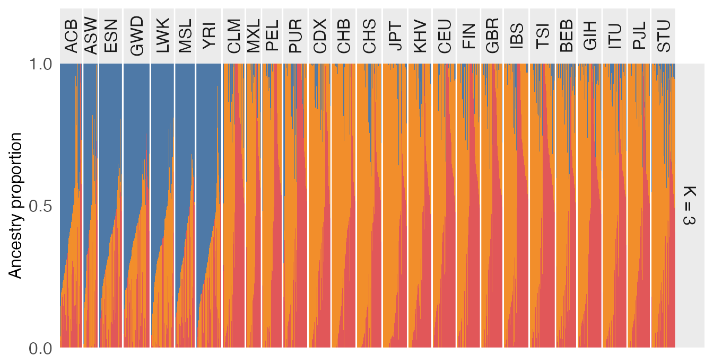
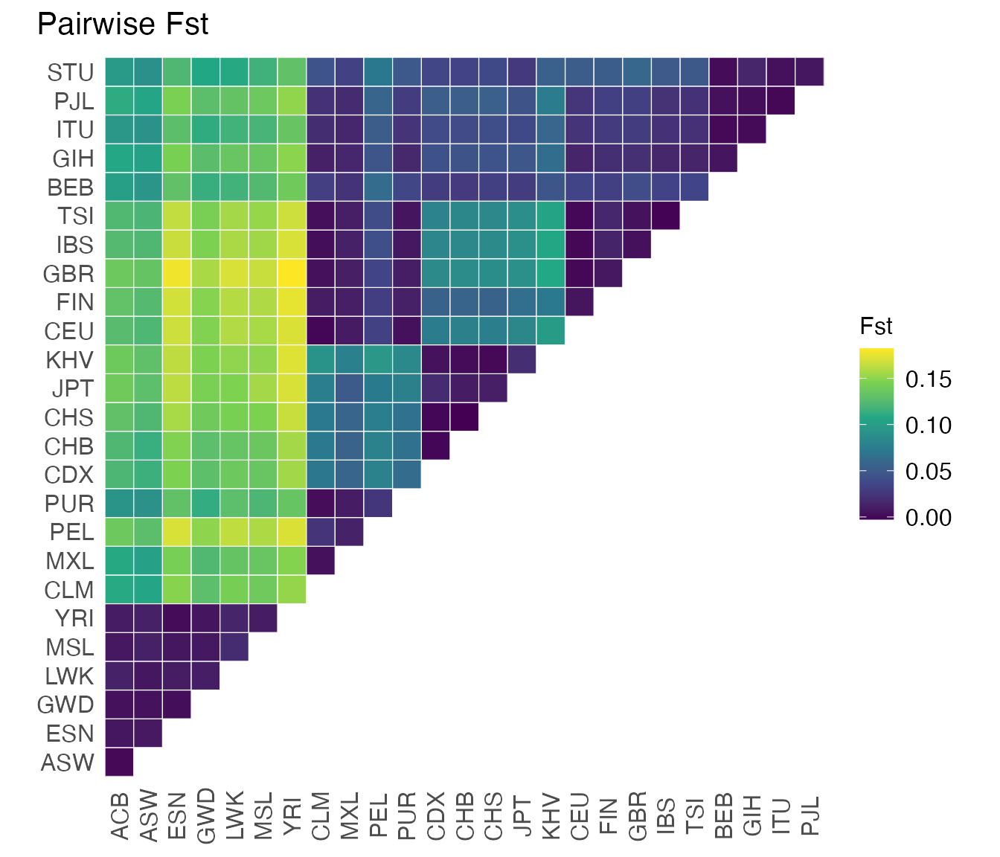

Population structure: PCA, admixture and Fst
Source:vignettes/population-structure.Rmd
population-structure.RmdPeople from the same population share more of their genetic variation with each other than with people from elsewhere, because they share more recent ancestors. This vignette shows three ways of looking at that population structure: principal component analysis (PCA), admixture analysis, and Fst.
We use two regions that come with the package:
example_neutral, 300 kb of chromosome 18 with no gene known
to be under strong selection, and example_lct, the lactase
gene, which has been under strong recent selection in Europeans.
library(snpscaper)
library(FactoMineR)
#> Warning: package 'FactoMineR' was built under R version 4.6.1
library(factoextra)
#> Warning: package 'factoextra' was built under R version 4.6.1
#> Loading required package: ggplot2
#> Warning: package 'ggplot2' was built under R version 4.6.1
#> Welcome to factoextra!
#> Want to learn more? See two factoextra-related books at https://www.datanovia.com/library/principal-component-methodsPreparing the data
PCA and admixture analysis assume that each SNP is an independent piece of evidence. Nearby SNPs are often inherited together (they are in linkage disequilibrium, LD), so we prune them first, keeping a set of SNPs that are only weakly correlated. We also remove rare SNPs, which carry little information about differences between populations.
neutral <- filter_snps(example_neutral, min_maf = 0.01, prune_ld = TRUE)
neutral
#> <snpscape> 2,504 people x 252 SNPs (GRCh38)
#> Regions: chr18:1,000,000-1,300,000
#> Populations: 26 populations in 5 super-populations
#> Steps: fetched -> MAF >= 0.01 -> missing <= 0.05 -> LD pruned (r2 <= 0.2)Principal component analysis
What PCA does
Each person is described by their genotypes at hundreds of SNPs, far too many dimensions to look at directly. PCA finds new axes, the principal components, that capture as much of the variation between people as possible: the first component captures the most, the second the most of what remains, and so on. Plotting people on the first two components gives a “map” in which people with similar genotypes are close together.
snpscaper does not have its own PCA function. Instead,
as_pca_table() prepares the data for the FactoMineR and
factoextra packages, which you may already know from other courses. The
first three columns of the table are labels (population,
super-population and sex), which we mark as “supplementary” with
quali.sup = 1:3 so that they are carried along but not used
in the calculation.
pca_table <- as_pca_table(neutral)
pca_table[1:4, 1:6]
#> pop super_pop sex chr18:1005430:C:T chr18:1005828:A:C
#> HG01879 ACB AFR male 0 2
#> HG01880 ACB AFR female 0 2
#> HG01882 ACB AFR male 0 2
#> HG01883 ACB AFR female 0 2
#> chr18:1005961:C:T
#> HG01879 0
#> HG01880 0
#> HG01882 0
#> HG01883 0
pca <- PCA(pca_table, quali.sup = 1:3, graph = FALSE)How much variation does each component capture?
fviz_eig(pca, addlabels = TRUE)
#> Warning: This FactoMineR PCA result contains only 5 eigenvalues and does not
#> include the complete spectrum. Refit the PCA with a larger `ncp` before drawing
#> a complete scree plot.
With genetic data, each component usually captures only a few per cent of the variation. That is normal: most genetic variation is shared by all populations, and only a small part differs between them.
Plotting people
fviz_pca_ind(
pca,
habillage = "super_pop",
palette = unname(superpop_colours),
geom = "point",
pointshape = 19,
mean.point = FALSE,
title = "Chromosome 18, 300 kb neutral region"
) +
theme_jb()
Even in this small region, the first component separates African from non-African people. This reflects human history: all non-African populations descend from a relatively small group of people who left Africa around 50,000 to 70,000 years ago, carrying only part of the genetic diversity that existed in Africa. African people are also spread much more widely along the second component than everyone else: a sign of their greater genetic diversity. People with recent mixed African and European ancestry (from ASW and ACB) lie between the two clusters.
habillage chooses the column that sets the colours, and
palette gives the colours. snpscaper’s
superpop_colours and pop_colours make sure the
same population always has the same colour. To colour by population:
pop_labels <- levels(pca_table$pop)
fviz_pca_ind(
pca,
habillage = "pop",
palette = unname(pop_colours[pop_labels]),
geom = "point",
pointshape = 19,
mean.point = FALSE,
title = "Coloured by population"
) +
theme_jb()
Things to keep in mind
- PCA is driven by the people included. Adding or removing populations
changes the components. Try
keep_pops()with different populations. - A small region contains far less information than the whole genome, so clusters overlap much more than in published genome-wide PCA plots.
- The components have no fixed meaning. The direction of an axis can flip between analyses.
Admixture analysis
What admixture analysis does
Admixture analysis assumes that people descend from K ancestral groups, and estimates what proportion of each person’s genome comes from each group. snpscaper uses the sNMF method from the LEA package, which runs inside R.
The ancestral groups are statistical constructs, not real historical populations. The method finds K groups whether or not they exist, and the results depend on which populations are included and how many people come from each.
adm <- run_admixture(neutral, k = 2:5, reps = 3)
#> Running admixture for K = 2, 3, 4, and 5 (3 runs each, 252 SNPs)...Choosing K
For each K, sNMF hides some genotypes, then checks how well the model predicts them. This cross-entropy is lower when the model fits better. A sensible K is where the curve flattens out or reaches its lowest point.
plot_cross_entropy(adm)
Ancestry proportions
Each person is a thin vertical bar, divided into the proportions of their genome assigned to each ancestral group:
plot_admixture(adm, k = 2:4)
plot_admixture(adm, k = 3, group = "pop")
The colours stand for ancestral groups, not populations, which is why they differ from the colours of the PCA plots. At K = 2 the analysis separates African from non-African ancestry, mirroring the first principal component. At higher K, nearly everyone appears as a mixture: a 300 kb region simply does not contain enough information to separate continents cleanly. Published admixture analyses use hundreds of thousands of SNPs from across the genome. Try a larger region (up to a few megabases) to see the groups become sharper.
To work with the numbers yourself, use
get_ancestry():
get_ancestry(adm, k = 3, wide = TRUE)
#> # A tibble: 2,504 × 7
#> sample_id pop super_pop k group_1 group_2 group_3
#> <chr> <chr> <chr> <int> <dbl> <dbl> <dbl>
#> 1 HG01879 ACB AFR 3 0.402 0.0001000 0.597
#> 2 HG01880 ACB AFR 3 0.0429 0.808 0.150
#> 3 HG01882 ACB AFR 3 0.391 0.343 0.267
#> 4 HG01883 ACB AFR 3 0.498 0.218 0.284
#> 5 HG01885 ACB AFR 3 0.439 0.414 0.147
#> 6 HG01886 ACB AFR 3 0.490 0.410 0.0999
#> 7 HG01889 ACB AFR 3 0.440 0.560 0.0001000
#> 8 HG01890 ACB AFR 3 0.709 0.123 0.168
#> 9 HG01894 ACB AFR 3 0.443 0.557 0.0001000
#> 10 HG01896 ACB AFR 3 0.0001000 0.538 0.462
#> # ℹ 2,494 more rowsFst
What Fst measures
Fst measures how much of the genetic variation lies between
populations rather than within them: 0 when two populations
have identical allele frequencies, 1 when they share no alleles at all.
snpscaper uses Hudson’s estimator, combined across SNPs (see
?calc_fst).
Fst does not need LD pruning, so we use all common SNPs:
neutral_common <- filter_snps(example_neutral, min_maf = 0.01)
calc_fst(neutral_common, by = "super_pop")
#> # A tibble: 10 × 3
#> group1 group2 fst
#> <chr> <chr> <dbl>
#> 1 AFR AMR 0.127
#> 2 AFR EAS 0.139
#> 3 AFR EUR 0.149
#> 4 AFR SAS 0.117
#> 5 AMR EAS 0.0662
#> 6 AMR EUR 0.00716
#> 7 AMR SAS 0.0281
#> 8 EAS EUR 0.0787
#> 9 EAS SAS 0.0401
#> 10 EUR SAS 0.0278Typical genome-wide values are around 0.1 to 0.15 between Africa and other continents, and around 0.05 to 0.1 between other continents. In other words, about 85 to 90% of human genetic variation is found within continental groups. Between populations of the same continent, Fst is usually around 0.01 or less:

Genes under selection
Natural selection can push allele frequencies apart in some populations, giving much higher Fst in a single gene than in the genome as a whole. Compare the LCT region with the neutral region:
lct_common <- filter_snps(example_lct, min_maf = 0.01)
calc_fst(lct_common, by = "super_pop")
#> # A tibble: 10 × 3
#> group1 group2 fst
#> <chr> <chr> <dbl>
#> 1 AFR AMR 0.0880
#> 2 AFR EAS 0.0797
#> 3 AFR EUR 0.173
#> 4 AFR SAS 0.0692
#> 5 AMR EAS 0.0243
#> 6 AMR EUR 0.0372
#> 7 AMR SAS 0.0116
#> 8 EAS EUR 0.0686
#> 9 EAS SAS 0.0388
#> 10 EUR SAS 0.0824Some comparisons involving Europeans are clearly higher in the LCT
region than in the neutral region (Europeans against South Asians,
Admixed Americans and Africans), because the lactase persistence allele
and the stretch of DNA around it rose in frequency in Europe. Others,
such as Europeans against East Asians, are not. Fst here is averaged
over all common SNPs in a 100 kb region, so a single selected variant
only shifts it so far; the allele frequencies of the variant itself (see
the diversity and selection
vignette) show the effect much more clearly. Fetch SLC24A5
or ACKR1 to see regions where Fst is far above the
genome-wide level.